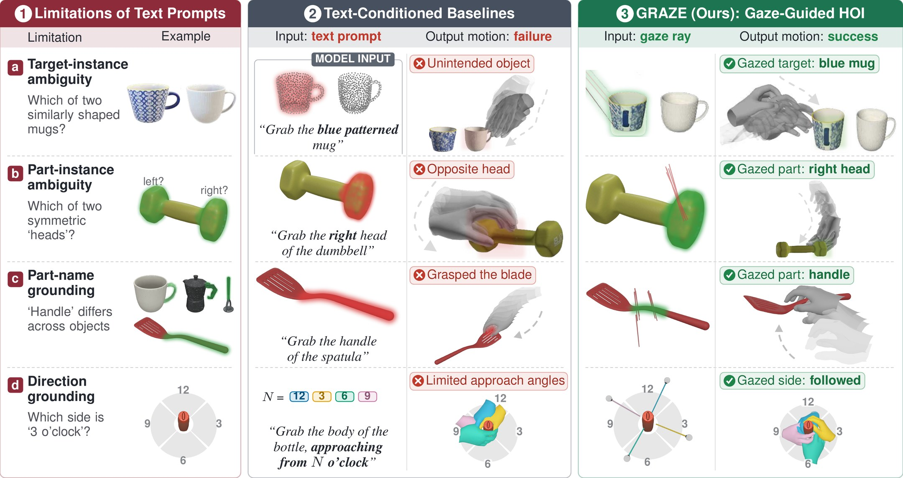
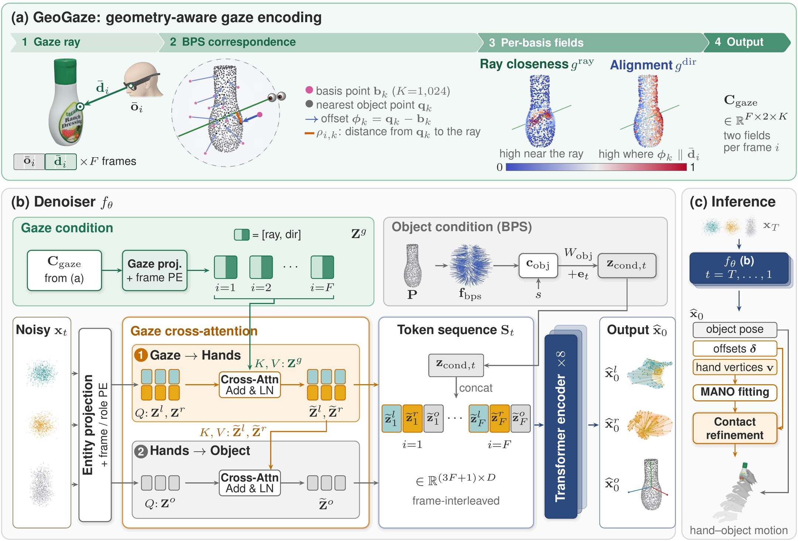
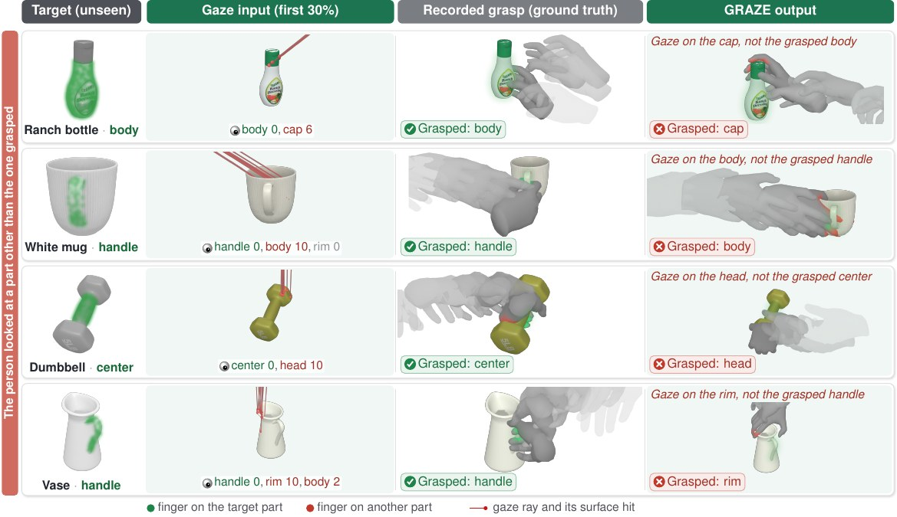
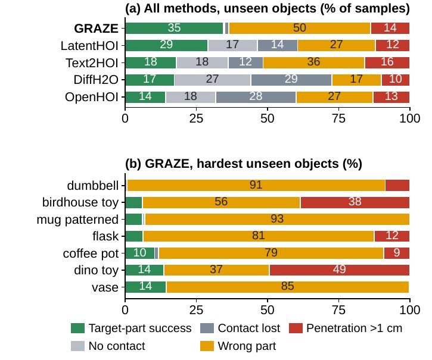

Words are a clumsy way to point at a place on an object.
Text-conditioned models must be told which object, which part and which side. Each of these is hard to say, and the models often do not listen.
Names do not pick an instance
Asked for the blue patterned mug, a text model takes the white mug next to it.
Parts need object-specific words
Asked for the spatula's handle, a text model grasps the blade.
“Left” has no reference frame
Prompted with “left” or “right”, a text model grasps the same end of the dumbbell.

The eyes get there first.
Before the hand moves, people look at what they are about to grasp. Smart glasses already record this gaze. GRAZE uses it as the only instruction.
Gaze becomes a field on the object surface.
A gaze ray is just a line in space. GRAZE turns it into something a hand can use: a map of where on the object the person was looking, and from which direction.

Rays → surface cues
For every point around the object: how close it is to a gaze ray, and how well it faces the viewer.
Hands attend to gaze
A diffusion Transformer generates hand and object motion; the hand tokens attend to the gaze cues.
Fit, then settle contact
MANO hands are fitted to the predicted vertices, and predicted hand-to-object offsets guide a short contact refinement.
No text, and still the right part.
Every test object is held out from training. The baselines are told the part in words; GRAZE only sees the gaze.
| Method | Input | Grasp success | Part Acc. | Part contact | Sim. stable |
|---|---|---|---|---|---|
| Text2HOI CVPR '24 | text | 35.3 | 36.8 | 36.6 | 44.0 |
| DiffH2O SIGGRAPH Asia '24 | text | 17.9 | 31.7 | 31.0 | 27.8 |
| LatentHOI CVPR '25 | text | 46.6 | 43.6 | 42.5 | 40.7 |
| OpenHOI NeurIPS '25 | text | 25.8 | 31.5 | 31.0 | 31.7 |
| GRAZE | gaze | 66.3 | 49.3 | 50.1 | 74.5 |
HOT3D-Grasp, three object-disjoint folds, ten samples per clip (%). Each baseline runs its released pipeline. On the separate GazeHOI dataset, without fine-tuning, GRAZE reaches 45.3% grasp success against 33.8% for the best baseline (939 clips).
Move the gaze, the hand follows.
We rotate the recorded gaze around the object. The approach of GRAZE turns with it in 59% of cases. A text model retrained with clock words (“from 3 o'clock”) follows a changed word in only 21%.
When a prompt exists, use both.
Gaze and words carry different information. Giving GRAZE both helps each side.
The approach side appears
Inputs whose approach turns with the rotated input (%): a changed clock word for text only, a rotated gaze for text + gaze. Words alone almost never move the side.
Part contact gets sharper
Share of contact on the target part (%). The pair gives the best part grounding of all methods.
Gaze is a hint, not a command.
GRAZE does what the eyes suggest. When people look at one part and then grasp another, GRAZE grasps the part they looked at.
Looking at the head, grasping the handle
The person watches the head of the potato masher, then takes it by the handle. GRAZE, which only sees the gaze, grasps the head.
The same pattern appears on the bottle cap, the mug body, the dumbbell head and the vase rim below.


- Target-part success
- Touches the target part in each of the final five frames, with at most 1 cm penetration.
- No contact
- The hand never touches the object at all.
- Contact lost
- The hand touches the object, but lets go or slips before the end: contact is missing in some of the final five frames.
- Wrong part
- Holds the object at the end, but mostly on another part.
- Penetration
- Holds the target part, but the hand enters the object by more than 1 cm.